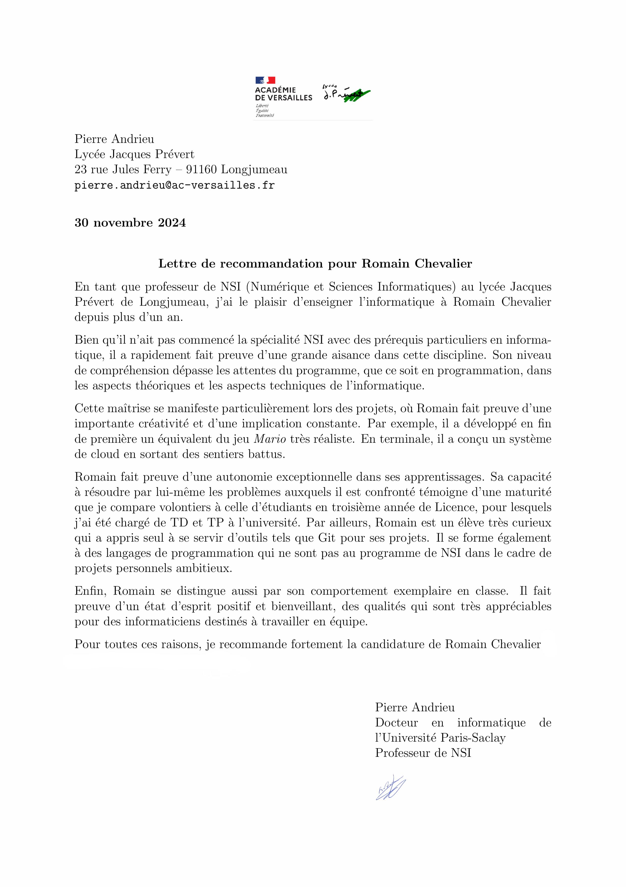

Bonjour, je suis
Romain Chevalier.
passionné par la conception et la création de jeux vidéo.
Je suis actuellement élève en Terminale générale, spécialités Maths et NSI avec les options de Maths expertes et Japonais et suis passionné depuis très jeune par les jeux vidéo et les différents univers et style de jeux qu’ils proposent (combat, épopée, histoire, ...).
About me
Métier souhaité
je souhaite éxercer le métier de Game développeur gameplay, qui pour moi sera le moyen de participer au mieux à la réalisation du jeu dans sa globalité et à bien comprendre l’ambition souhaitée par le Game design.
Softskills
- Je suis passionné par l`univers du jeu vidéo et notamment la réalisation et la création de jeux vidéo. J`aime comprendre comment sont faites certaines mécaniques de jeu, (le codage) et toute la partie game design.
- Je suis curieux dans plein de domaines tels que la science, la physique quantique et l`informatique quantique ainsi que l`IA et son développement. J`aime également la culture du japon , c`est pour cela que j`apprends le japonais depuis 3 ans avec le cned.
- Je suis persévérant, je cherche toujours une solution à un problème même si cela peut me prendre des semaines de recherches.
Compétences
Projets notables
Puissance 4

Un jeu de Puissance 4 développé avec Pygame, incluant une adaptation automatique de la taille, gestion des erreurs et système de victoire, mode 2 joueurs avec un changement de couleurs.
Mario en 2D

Réalisation d'un niveau de Mario en utilisant des tableaux 2D, avec un système de mouvement innovant basé sur la manipulation de matrices ainsi que la génération de tableaux 2D par compréhension d'images.
Remake Zelda

Réalisation de Link's Awakening sur Unity avec système de combat, inventaire et sauvegarde JSON, système d'inventaire et de swap d'armes à la Zelda.
Short Création

Projet d'application servant à couper de longues vidéos en petites vidéos au format 9/16 avec tkinter, python et cuda pour utiliser la puissance des GPU nvidia et le multiprocessing.
ISART Summer School Project

Réalisation d'un jeu sur unity en 2D top down en visual scripting.
Le but du jeu est de battre tous les ennemis et affronter le grand méchant avec des pierres et un arc.
Cloud File Explorer

Projet d'application de sauvegarde de dossiers sécurisés par login, contenant des documents.
Réalisé en groupe en projet de NSI.
Le Portfolio

Réalisation d'un portfolio pour montrer mes réalisations et mes compétences.
Unreal Engine Project

Projet débuté en 2022 pour découvrir le blueprint. Ce projet se concentre sur la création d'un système de barre de vie(nombre de coeurs) et d'un personnage qui fait de l'escalade sur tout type de structures.
Youtube Uploader

Ce code est un script python qui permet de mettre en ligne des vidéos sur youtube. Il utilise l'api officielle de youtube et un projet google cloud pour se connecter directement au compte youtube de l'utilisateur et pouvoir uploader des vidéos.
Peach Multiplayer in Godot

Un Remake de Super Mario World sur SNES avec Peach en caractère principale. Ce projet a pour objectif d'apprendre à coder en GDscript sur Godot et de comprendre les bases du Multiplayer local sur Godot.
Lettre de motivation
Je suis actuellement élève en Terminale générale, spécialités Maths et NSI avec les options de Maths expertes et Japonais et suis passionné depuis très jeune par les jeux vidéo et les différents univers et style de jeux qu’ils proposent (combat, épopée, histoire, ...).
Passionné par la conception et création de jeux vidéo, en parallèle de mes études, j’apprends par moi-même différents types de langage (html, unity, javascript, python, unreal engine, C#). Et je suis également curieux d’autres matières comme les sciences, la physique quantique et la culture Japonaise.
Voulant pouvoir exercer un métier passion, je me suis renseigné dès la seconde sur les différents métiers des jeux vidéo et me suis rendu dans différentes portes ouvertes des écoles de jeu vidéo. Cela a confirmé mon intérêt pour le métier de Game développeur gameplay, qui pour moi sera le moyen de participer au mieux à la réalisation du jeu dans sa globalité et à bien comprendre l’ambition souhaitée par le Game design.
C’est donc en ce sens que j’ai pris l’option NSI, afin de progresser dans le codage et la méthodologie d’analyse, en plus de mes apprentissages personnels sur différentes techniques.
Pour me persuader définitivement que c’était la voix que je voulais emprunter pour mon avenir professionnel, j’ai réalisé un stage au sein l’ISART (summer school code et jeu vidéo 2D juillet 2024) qui m’a complètement convaincu.
C’est pour cela que je souhaite intégrer votre établissement d’excellence, et ainsi pouvoir exercer un métier passion où je serai enthousiaste chaque matin.
Ayant participé à la porte ouverte l’année dernière et cette année, l’ambiance, les différents univers du jeu vidéo (création, art, programmation ...) étant réunis et les discussions avec les étudiants tous épanouis, m’ont persuadé que c’était au sein de votre établissement que je souhaitais étudier. De plus la manière de travailler en mode projet m’attire beaucoup et les opportunités à l’étranger sont plus qu’attrayantes.
Langages de programmation
Autre languages
CV

Lettre de recommandation
Contact
Vous pouvez me joindre par mail à l'adresse suivante : romain.chevalier40@gmail.com
Mon numéro de téléphone est : 06 09 13 48 80